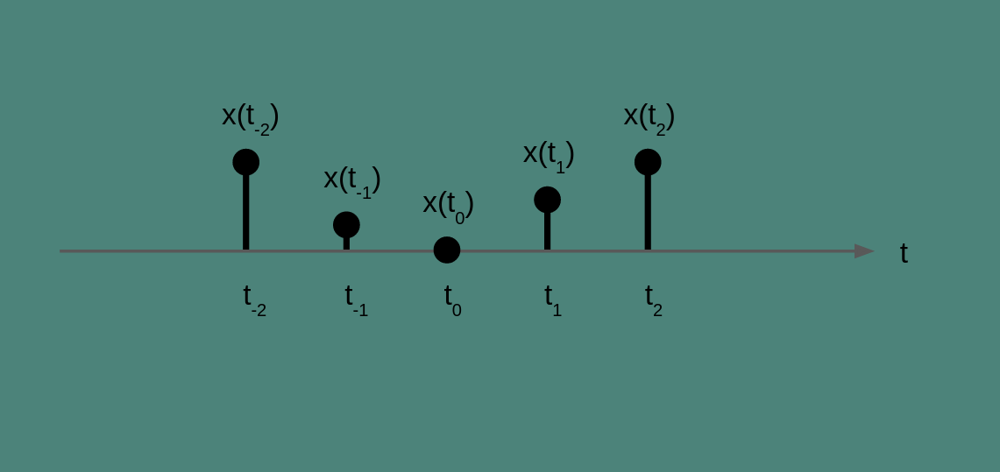
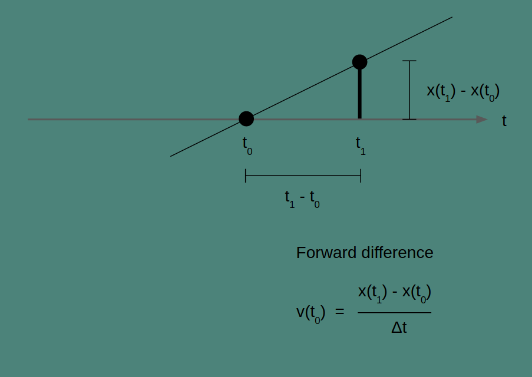
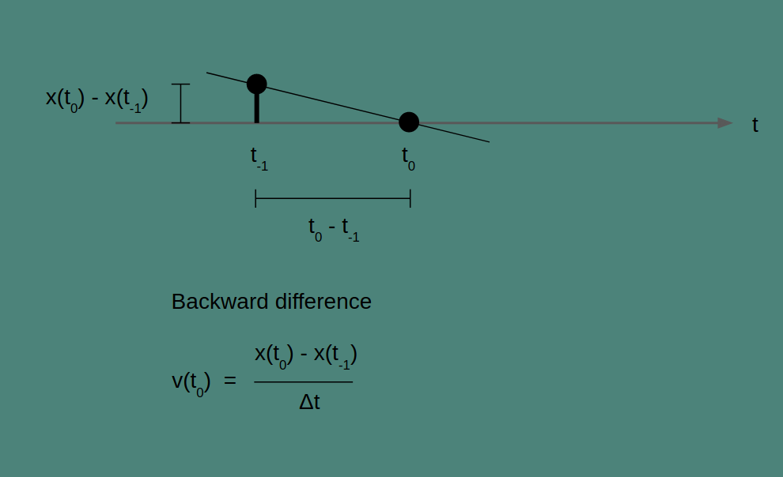
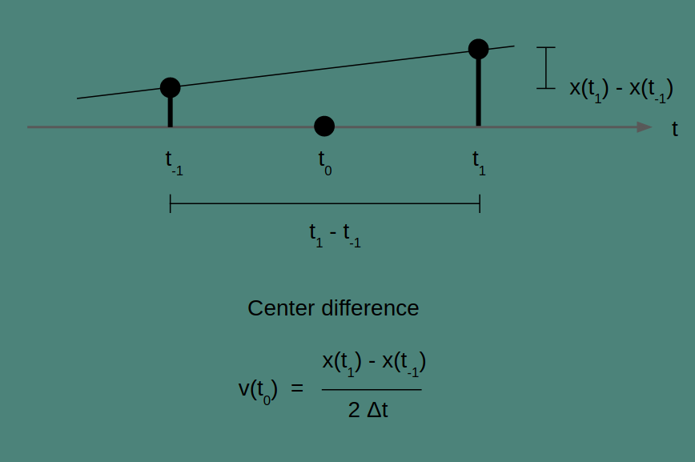
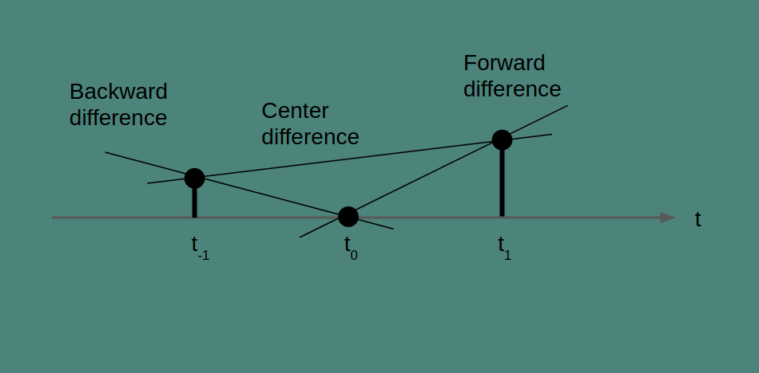

part of Course 137 Signal Processing Techniques
Sometimes we're not so interested in the thing our data measures, as we are in how it changes over time. Sea level is interesting, but how fast it is changing over hours and years is even more so. Population of a town is important, but how fast it is going up or down is a critical economic indicator. Customer purchases are informative in their own right, but whether customers are making those purchases less often is a strong signal for predicting whether they'll leave you.
You can also do this with data measured across different positions. Elevation data is useful, but how elevation changes as you walk tells you how steep the terrain is and is a very important factor to keep in mind as you plan your hike.
To calculate rate of change, you'll need a series of measurements made at regularly spaced intervals of time or distance. (There are methods for dealing with irregular intervals, but that will be the topic of another post.) For our example, we'll measure the temperature, x, at different times, t, to find the temperature change per hour, v. We'll make those measurements at intervals of 1 hour.
Temperature data has lots of uses, but we are trying to choose what to wear outside today, so we're interested in answering the question of whether it's getting warmer or cooler right now. What's the rate of change of temperature at this moment?

The current time is t_0. We would like to know if the temperature is going up or down and how fast.
There are a few different ways to get at this. We can't measure it directly. The notion of rate of change comes from calculus and derivatives, and the only way you calculate it directly is to have measurements infinitessimally close together. Our measurements are an hour apart, so we're just going to have to do the best we can with that. We'll look at three methods: forward difference, backward difference, and center difference.
Forward difference

All three of these methods can be understood as drawing a line through two points and finding the slope of that line. How they differ is in which two points they use. Forward difference uses the current point, at t_0, and the next, at t_1.
The slope of our line is the change in x over the change in t for any pair of points. For the two points we've chosen, this gives us the equation for v(t_0) in the figure above.
Note that for the very last temperature measurement we make, we won't be able to estimate a rate of change with the forward difference. There is no next point to use. The number of rate of change estimates we get will be one less than the number of measurements we have.
The Python implementation of this takes advantage of Numpy's
diff(). It subtracts every element in an array from
the one that follows. For a sampling interval dt,
the forward difference of the array measurements is
np.diff(measurements) / dt.
Backward difference

In backward difference, the line that we are finding the slope of is between the current measurement and the previous measurement. It estimates rate of change by looking back. The change in value and the change in time between the current and the previous measurement give the slope of the line that connects them as shown in the figure.
If you look carefully, you'll notice that the backward difference is calculated the same way as the forward difference, but the interpretation is different. The resulting time series in both cases is the same, but shifted by one time step. Where the forward difference can’t calculate a rate for the last element In the sequence, the backward difference can’t calculate a rate for the first element. There is nothing to look back to.
Center difference

In the center difference, the two points that are connected are the point preceding and the point following the time point of interest. To get the slope, we take the difference between these two values and we double the time step to account for the fact that we skipped a measurement. It is a quirk of the center difference that the current measurement isn’t part of the rate of change calculation at all. Also, note that because the center difference looks both forward and back by one time step, it will not be able to create an estimate for either the first or last elements of a series.
To calculate the center difference in Python on an array of values,
we will have to do some slicing to pull out an array of
the pre-measurements and post-measurements for each point
of interest.
measurements[: -2] gathers all but the last
two elements measurements, and
measurements[2:] gathers all but the first two elements.
Now we can subtract one from the other to find the pairwise
difference between each before and after point, and divide
by two times the time interval dt:
(measurements[2:] - measurements[:-2]) / (2 * dt)
When to use which

Notice that these three methods generate very different results. According to the backward difference, temperature is decreasing rapidly. According to the forward difference, temperature is increasing rapidly. And according to the center difference, temperature is increasing at a modest pace. Which method you choose matters, especially when the phenomenon you're measuring is changing on the timescale of your measurement period.
The center difference has a lot to recommend it. It's my first choice whenever I can use it. Because it is centered around the time of interest, it’s not biased in the direction of future or past events. And because it incorporates measurements over a longer time period, it’s more accurate.
Sometimes, center difference isn’t an option. If you are at the beginning or the end of your time series, then you will be stuck With forward or backward difference. A common situation is when you want to estimate the rate of change of something going on right now. In that case, we don’t have any future measurements because they haven’t happened yet. When you’re in that situation, backward difference is a fine way to go.